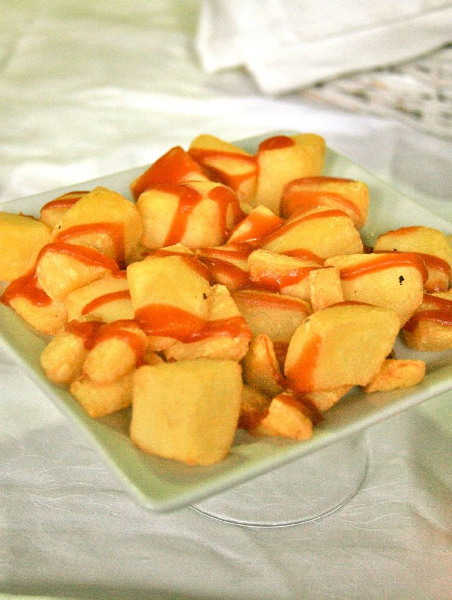

Sauces

Sauces
Salsa brava
La sauce des patatas bravas
Préparation : 5 min
Cuisson : 10 min
Ingrédients (pour 4 personnes, en tapas)
- 200 g de bouillon de volaille et de légumes
- 2 cuillères à café de farine
- 1 cuillère à café de paprika fort
- ½ cuillère à café de paprika doux
- 1 cuillère à soupe d’huile d’olive
- sel
Quantités adaptées. Les temps de cuisson ne sont pas recalculés.
- Revenir la farine dans l’huile à feu doux, sans la brûler.
- Verser le bouillon peu à peu en fouettant, laisser épaissir.
- Ajouter paprikas et sel, cuire encore un instant.
- Servir chaud sur des pommes de terre frites en deux bains.
À conserver au froid, jamais au placard
Au réfrigérateur entre 0 et 4 °C : 2 jours au plus. Ne pas congeler. Refroidir vite, réchauffer jusqu’à ébullition.
AstuceLa brava de Madrid ne contient pas de tomate.
D’après la Real Academia de Gastronomía. Traduit et reformulé, « cucharas » comprises comme cuillères à café.